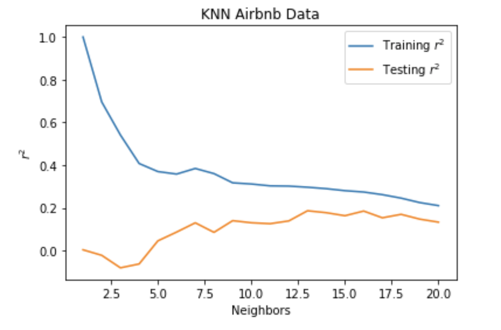

K-nearest neighbor
A KNN regression calculates the average of the numerical target of the K nearest neighbors. The algorithm selects the best K value for the given data by running itself several times with different values of K. The model chooses the K that reduces the number of errors encountered while maintaining the ability to accurately make predictions when provided with new data. Our KNN average was .225 which means the similarities are minimal. If the neighbors had been more similar, a higher KNN average would have resulted.
